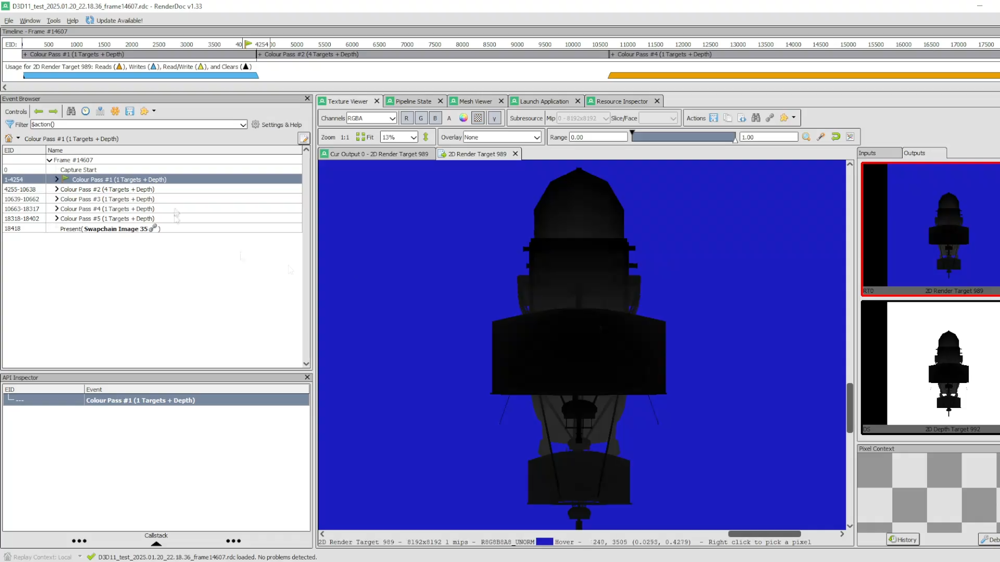
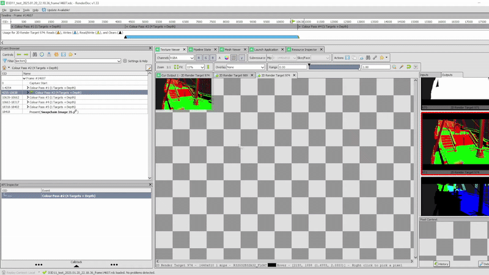
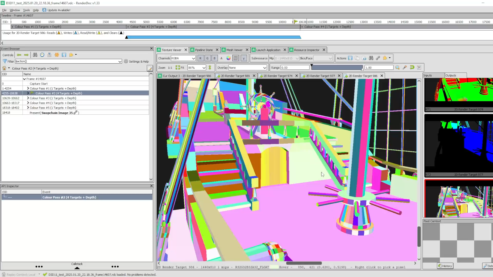
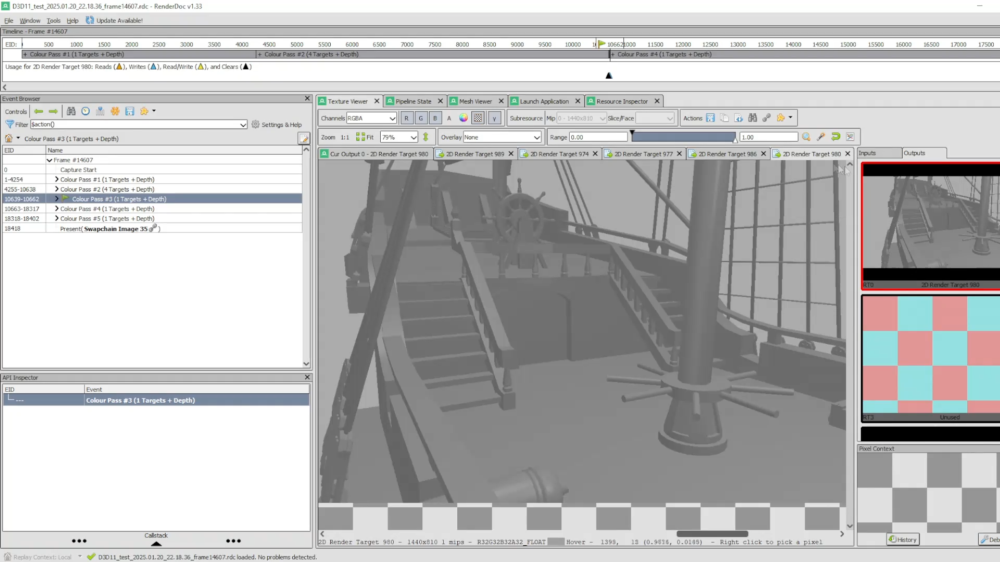
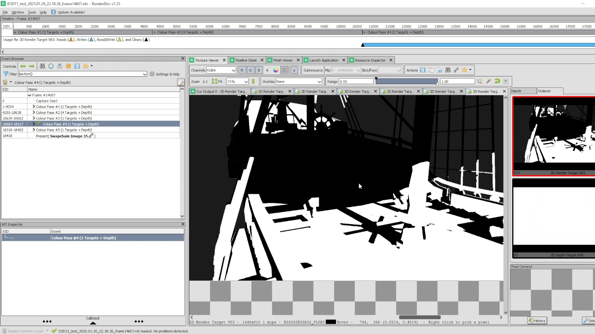
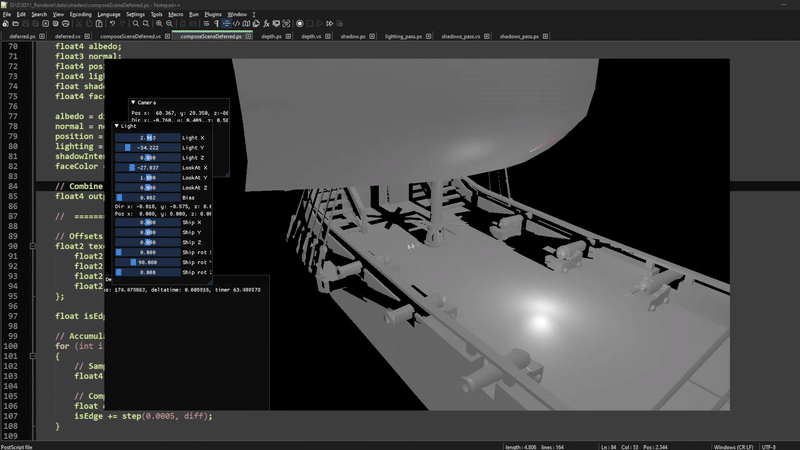
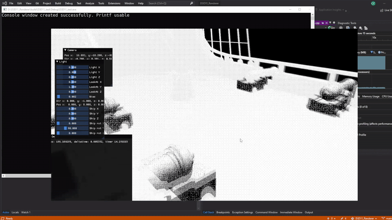
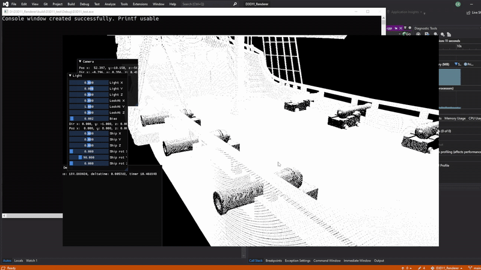

Passion for Learning
Enthusiastic videogames programmer always looking for something new to learn.
Using DirectX11 and a custom renderer written from scratch, I recreated this game's peculiar art style. The final look of the game is achieved using three distinct techniques: Dithering, edge detection, and texture mapping.
To recreate the scene I used a deferred rendering solution, composed following these steps:

Shadow mapping - an orthogonal view of the scene from the point of view of a specific (directional in our case) light, storing depth information as a texture.

Typical rendering information is bound to specific textures: diffuse, normals, world positions.

An algorithm assigns every mesh face a different color, and the result is stored in a texture (used for edge detection). This is achieved by using the normal of each of the vertices to generate a pseudo "seed" for a color. Color interpolation between vertices is disabled for this step.

Completed Blinn-Phong lighting pass

Completed Shadow map pass (project first texture onto the scene). It is important to note that for the sake of our effect, any nuance in shadow intensity is discarded as the final scene only considers black or white as valid colors.
Using all those textures the final scene is composed:

A scene without the effect can be visualized which includes basic Blinn-Phong lighting, an albedo texture, and shadow mapping.
The dithering technique works by assigning each color in the scene a luminance value which will be converted to a pattern using the precomputed dither textures.
The pattern is assigned in world space using texture mapping, projecting the dither textures onto the meshes. Screen space dithering would make the pattern ignore camera rotation and perspective.

Screen Space dithering (Pattern remains static independent of camera or perspective).

World Space dithering (Desired look).
The edge detection algorithm uses the texture with the colors to determine borders, simply identifying as an edge any intersection between two differently colored areas.
The shadow and edge detection effects are applied independently from the dithering. By tweeking the textures and their frequencies we can adjust how much influence said textures have on the final look of the scene. An example of a complete scene is:

Final Scene look.